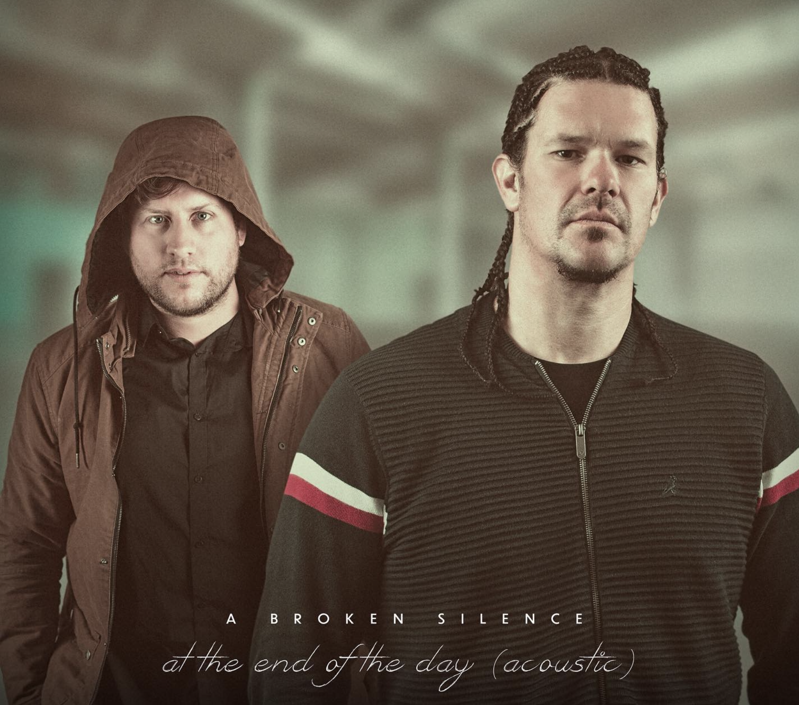

A Broken Silence

Biography
A Broken Silence is an Australian Rock / Rap band from the Western suburbs of Sydney. Formed in 2007, the band was founded by John (Torcha) Chmielewski, Daniel Bartulovich and Brendon Costello. A Broken Silence have released 4 Full Length studio albums. Over the years they have collaborated with artists; Bobby Kim (Korea), Tim Freedman (The Whitlams), Ozi Batla (The Herd), Patriarch, Drapht & the Sydney Symphony Orchestra. The band released their first full-length studio album, titled “All For What” in 2009, which was well received in Northern Europe and the US. In 2010, their second self titled release featured the single “Hope” and was released worldwide through DeathRow records / WideAWAKE Entertainment. The third studio album “All the Way Down” was managed and released independently by the band and featured “Boom” and “This Cancer”. May, 2020: A Broken Silence released their album Soul, an eagerly anticipated follow up to their 2017 release All the Way Down. The album is produced by Dave Petrovic (Tonight Alive, Kerser, Northlane), who has worked alongside ABS since 2009. The album features hard hitting tracks such as “Soul” “At the end of the day” and “Wake up”.
Soul Album
A Broken Silence return with their highly anticipated new album Soul. It is said to be more personal than the previous records, but they are still offering some elements about political issues. Bartulovich has said “This album is definitely back to what we are all about. Hip hop/rock with a modern take on the production and sound. The last album we experimented with a lot of electronic production which was fun. However, this time we wanted to incorporate what we had learnt from the last LP and fuse it with what we really loved about the original records as well”.
The songs in albums
After the short intro track “37”, the album bursts into life with “Wake Up”. The thunderous drums and monstrous riffs set up a mood that means business. Torcha then comes in with “Seems like the pressure is building / No time to spend with my children / Seems like I’m working for nothing / Feels like I’ve wasted a million”. The band’s trademark sound is complete when Bartulovich arrives for the chorus. From here until the end, he adds his blend of melodic vocals and screaming dynamics to the mix.
Throughout the release, you have to admire how this duo delivers each song with such confidence. Over time, they have learnt what works and what does not. They now know how to blend their rock/hip-hop soundtrack with their impactful stories/messages to maximum effect.
Links
© Made in 2022 by Maxim Sych and Ivan Tsukanov. All information gathered on this website took from Spotify Group page and Indiebandguru website. All links are above.